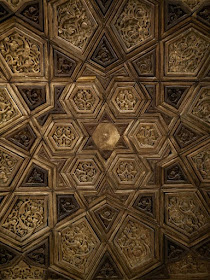

The Museum of Islamic Art, located in the heart of Historic Cairo, is considered to be the largest Islamic Art museum in the world, as it houses close to a 100,00 antique Islamic artifacts of various types collected from India, China, Iran, all the way to the Arabian Peninsula, the Levant, Egypt, North Africa and Andalusia.